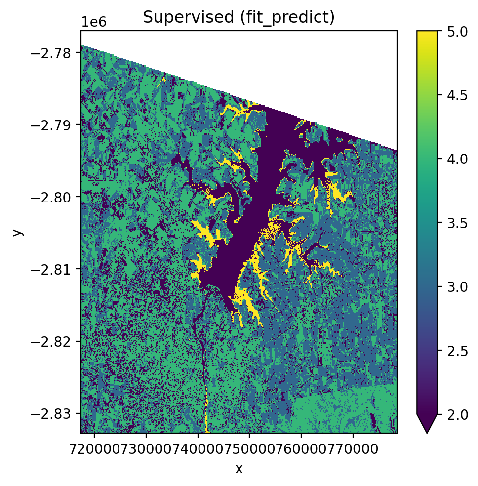
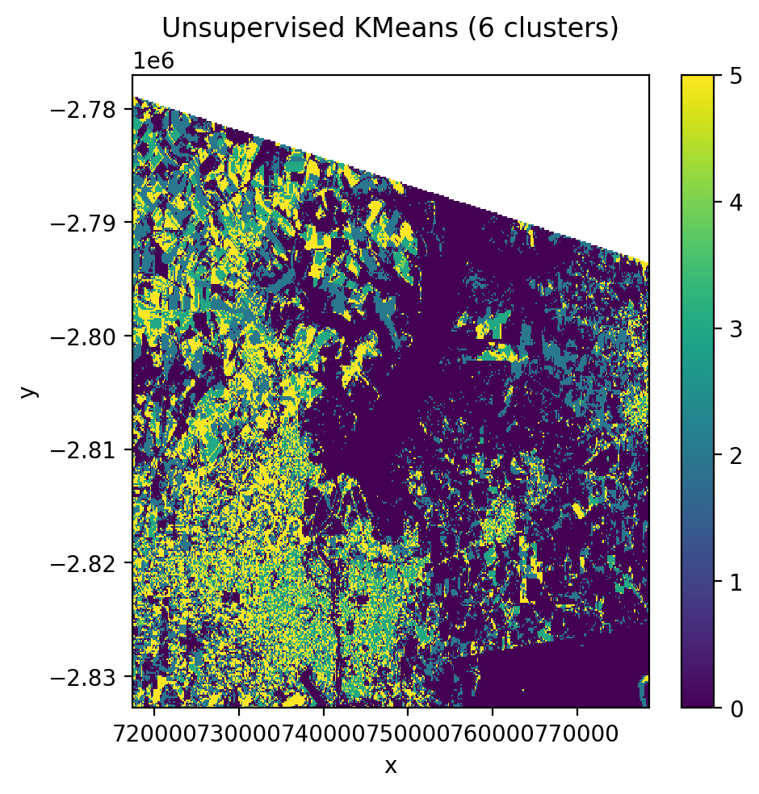
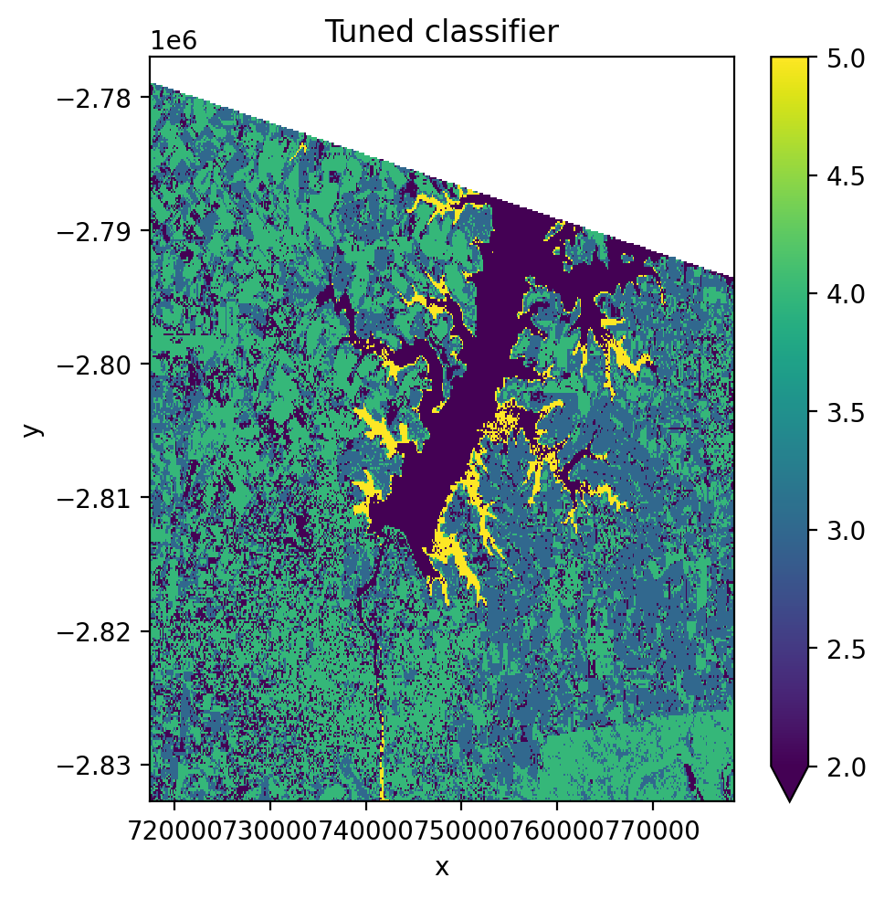
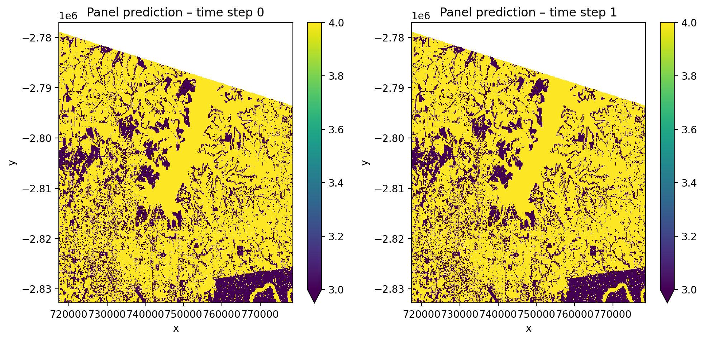
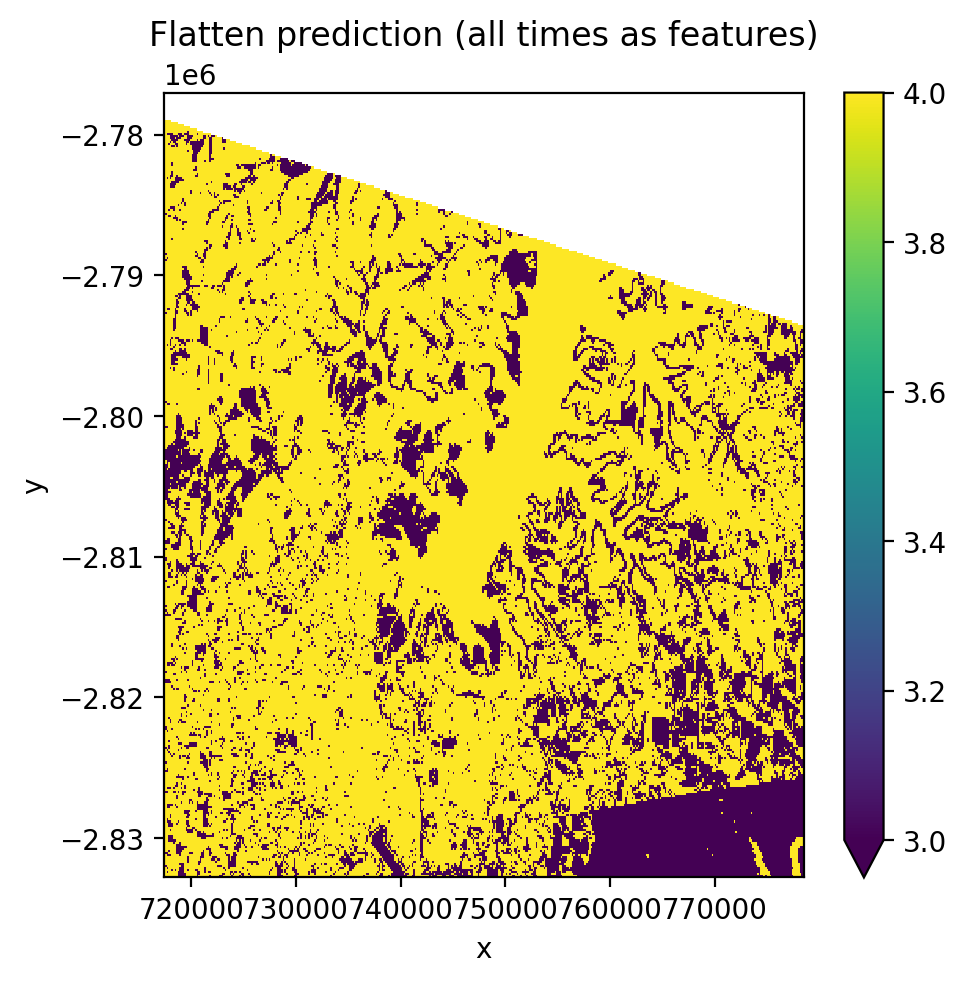
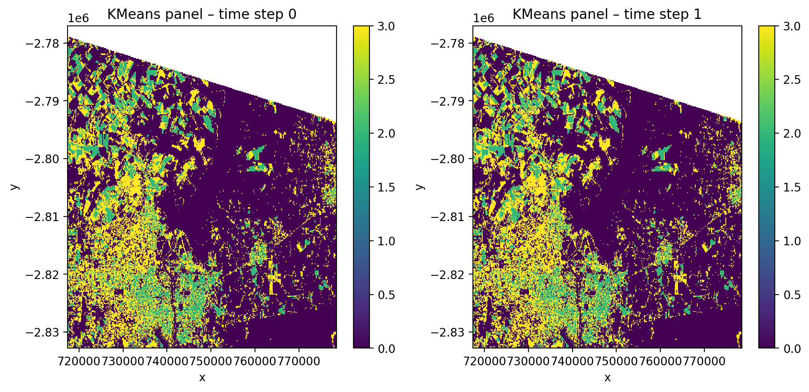
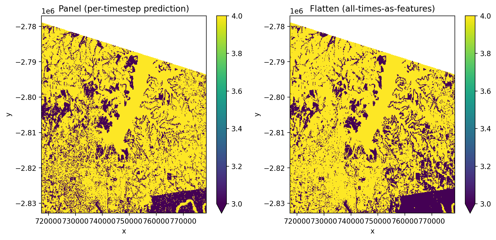
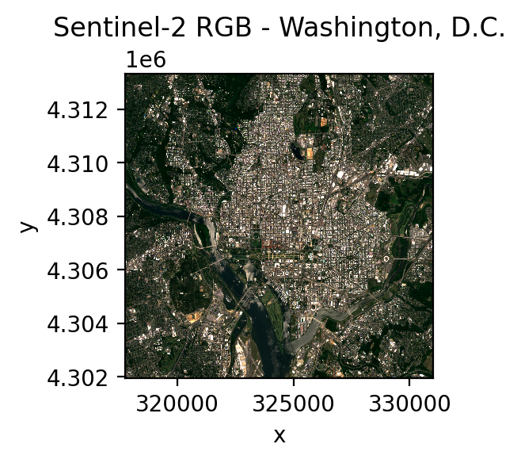
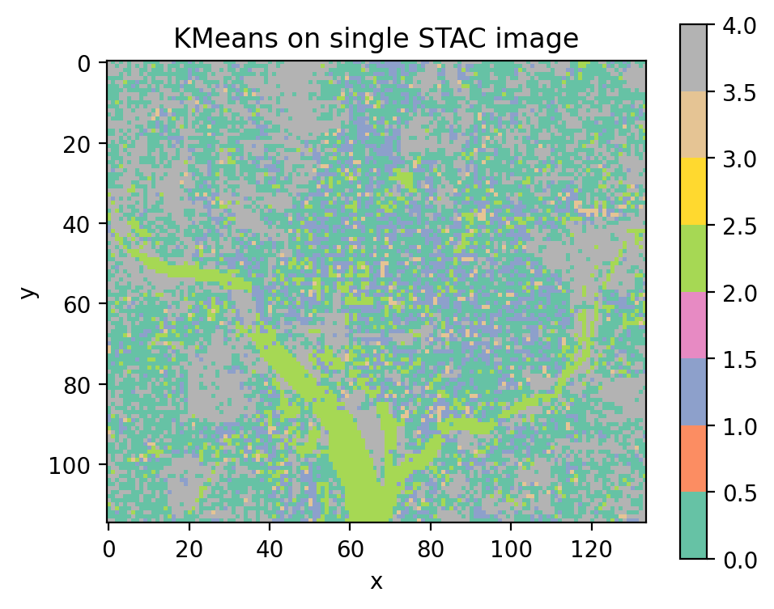

Machine learning#
GeoWombat’s ML module works with any scikit-learn compatible classifier or
pipeline. Pass a classifier to fit(),
predict(), or fit_predict() and it
will be applied to the raster data as an xarray DataArray.
To install ML dependencies:
pip install "geowombat[ml]"
Recommended classifiers for remote sensing#
Supervised#
Classifier |
Module |
Notes |
|---|---|---|
Random Forest |
|
Most widely used in remote sensing; handles high-dimensional data well, robust to noise |
LightGBM |
|
Fast gradient boosting; strong accuracy with large datasets, supports categorical features |
Gradient Boosted Trees |
|
Strong accuracy; slower than LightGBM on large datasets |
Support Vector Machine |
|
Effective in high-dimensional spaces; works well with small training sets |
Gaussian Naive Bayes |
|
Fast and simple baseline; assumes feature independence |
k-Nearest Neighbors |
|
Non-parametric; useful for complex class boundaries |
Unsupervised#
Classifier |
Module |
Notes |
|---|---|---|
K-Means |
|
Standard clustering; fast, works well for spectrally distinct classes |
Mini-Batch K-Means |
|
Faster K-Means variant for large rasters |
Gaussian Mixture Model |
|
Soft clustering; models class overlap better than K-Means |
Setup#
import geowombat as gw
from geowombat.data import (
l8_224078_20200518,
l8_224078_20200518_points,
stac_training,
)
from geowombat.ml import fit, predict, fit_predict
import geopandas as gpd
import matplotlib.pyplot as plt
import numpy as np
from sklearn.pipeline import Pipeline
from sklearn.preprocessing import LabelEncoder, StandardScaler
from sklearn.decomposition import PCA
from sklearn.naive_bayes import GaussianNB
from sklearn.cluster import KMeans
# Polygon labels (integer 'lc' column, EPSG:4326)
labels_poly = gpd.read_file(stac_training)
# Point labels (need LabelEncoder for string names)
le = LabelEncoder()
labels_point = gpd.read_file(l8_224078_20200518_points)
labels_point['lc'] = le.fit(labels_point.name).transform(labels_point.name)
labels_point = labels_point.drop(columns=['name'])
Nodata handling#
By default, fit_predict() and predict() mask nodata pixels in the
output with NaN (mask_nodataval=True). This prevents nodata regions from
being assigned a class label.
When opening a file with gw.open(..., nodata=0), GeoWombat builds a
binary nodata mask from the original file before warping. This mask is
attached as the _nodata_mask coordinate and survives reprojection and
time-stacking. The _mask_nodata() method uses it to replace predictions
at nodata locations with NaN.
with gw.config.update(ref_res=150):
with gw.open(l8_224078_20200518, nodata=0) as src:
# _nodata_mask is automatically attached
print('Has nodata mask:', '_nodata_mask' in src.coords)
# mask_nodataval=True (default) masks nodata in predictions
y = fit_predict(src, pl, labels_poly, col='lc')
To disable nodata masking, pass mask_nodataval=False. This is useful
when you want to handle masking yourself or inspect raw predictions.
Supervised classification#
Using fit() then predict() (two-step)#
pl = Pipeline([
('scaler', StandardScaler()),
('pca', PCA()),
('clf', GaussianNB()),
])
with gw.config.update(ref_res=150):
with gw.open(l8_224078_20200518, nodata=0) as src:
X, Xy, clf = fit(src, pl, labels_poly, col='lc')
y = predict(src, X, clf)
y.plot(robust=True)
{kind=link}
Using fit_predict() (one-step)#
with gw.config.update(ref_res=150):
with gw.open(l8_224078_20200518, nodata=0) as src:
y = fit_predict(src, pl, labels_poly, col='lc')
y.plot(robust=True)
{kind=link}

Unsupervised classification (KMeans)#
No training labels needed. The algorithm identifies clusters directly from the pixel values.
cl = Pipeline([('clf', KMeans(n_clusters=6, random_state=0))])
with gw.config.update(ref_res=150):
with gw.open(l8_224078_20200518, nodata=0) as src:
y = fit_predict(src, cl)
y.plot(robust=True)
{kind=link}

Band-stacked classification#
Stack multiple images along the band dimension with stack_dim='band'.
This concatenates spectral bands from each date into one long feature vector
per pixel.
with gw.config.update(ref_res=150):
with gw.open(
[l8_224078_20200518, l8_224078_20200518],
stack_dim='band',
nodata=0,
) as src:
print('Band-stacked shape:', src.shape)
y = fit_predict(src, pl, labels_poly, col='lc')
y.plot(robust=True)
{kind=link}
Cross-validation and hyperparameter tuning#
Use GridSearchCV with CrossValidatorWrapper to tune pipeline
hyperparameters.
from sklearn.model_selection import GridSearchCV, KFold
from sklearn_xarray.model_selection import CrossValidatorWrapper
cv = CrossValidatorWrapper(KFold())
gridsearch = GridSearchCV(
pl,
cv=cv,
scoring='balanced_accuracy',
param_grid={
'scaler__with_std': [True, False],
'pca__n_components': [1, 2, 3],
},
)
with gw.config.update(ref_res=150):
with gw.open(l8_224078_20200518, nodata=0) as src:
X, Xy, pipe = fit(src, pl, labels_poly, col='lc')
gridsearch.fit(*Xy)
print('Best params:', gridsearch.best_params_)
pipe.set_params(**gridsearch.best_params_)
y = predict(src, X, pipe)
y.plot(robust=True)
{kind=link}

Time-stacked classification with temporal_mode#
When opening multiple images with stack_dim='time', the data has shape
(time, band, y, x). This is the format returned by STAC queries and
multi-date gw.open() calls. The temporal_mode parameter controls how
time is handled during classification:
'panel'(default) — each pixel-time is an independent sample with B spectral features. Output retains the time dimension with one prediction per time step.'flatten'— all time steps are flattened into the band dimension, creating T×B features per pixel. Output has no time dimension.
Input |
|
Features |
Output shape |
|---|---|---|---|
|
|
B |
|
|
|
T × B |
|
Panel mode#
Each pixel-time combination is treated as an independent sample. The output
retains the time dimension, giving one prediction map per time step. Nodata
pixels are masked automatically (mask_nodataval=True by default).
pl_panel = Pipeline([
('scaler', StandardScaler()),
('pca', PCA()),
('clf', GaussianNB()),
])
with gw.config.update(ref_res=150):
with gw.open(
[l8_224078_20200518, l8_224078_20200518],
stack_dim='time',
nodata=0,
) as src:
y_panel = fit_predict(
src, pl_panel, labels_point, col='lc',
temporal_mode='panel',
)
print(f'Shape: {y_panel.shape}') # (2, 1, 372, 408)
print(f'Dims: {y_panel.dims}') # ('time', 'band', 'y', 'x')
# Since both time steps use the same image, predictions should match
print('Time steps identical:',
np.allclose(y_panel.isel(time=0).values,
y_panel.isel(time=1).values, equal_nan=True))
{kind=link}

Flatten mode#
All time steps are flattened into the band dimension, creating T×B features per pixel. This produces a single prediction map regardless of how many time steps exist.
pl_flatten = Pipeline([
('scaler', StandardScaler()),
('pca', PCA(n_components=1)),
('clf', GaussianNB()),
])
with gw.config.update(ref_res=150):
with gw.open(
[l8_224078_20200518, l8_224078_20200518],
stack_dim='time',
nodata=0,
) as src:
y_flat = fit_predict(
src, pl_flatten, labels_point, col='lc',
temporal_mode='flatten',
)
print(f'Shape: {y_flat.shape}') # (1, 372, 408)
print(f'Dims: {y_flat.dims}') # ('band', 'y', 'x')
{kind=link}

Unsupervised clustering with time-stacked data#
cl_time = Pipeline([
('scaler', StandardScaler()),
('clf', KMeans(n_clusters=4, random_state=0)),
])
with gw.config.update(ref_res=150):
with gw.open(
[l8_224078_20200518, l8_224078_20200518],
stack_dim='time',
nodata=0,
) as src:
y_cl = fit_predict(
data=src, clf=cl_time,
temporal_mode='panel',
)
{kind=link}

Compare panel vs flatten#
{kind=link}

Classification with STAC satellite imagery#
GeoWombat can stream satellite imagery directly from cloud catalogs using
open_stac(). The returned data has shape (time, band, y, x) and works
directly with fit_predict(). No file downloads are needed — data is read
from Cloud Optimized GeoTIFFs (COGs) on the fly.
To install STAC dependencies:
pip install "geowombat[stac]"
Search and load imagery#
Use open_stac() to search a STAC catalog and load the matching scenes.
Set compute=True to download the data into memory with a progress bar.
from geowombat.core.stac import open_stac
# Search for Sentinel-2 imagery over Washington, DC
data, df = open_stac(
stac_catalog="element84_v1",
collection="sentinel_s2_l2a",
bounds=(-77.1, 38.85, -76.95, 38.95),
epsg=32618,
bands=["blue", "green", "red", "nir"],
start_date="2023-06-01",
end_date="2023-07-31",
cloud_cover_perc=20,
resolution=100.0,
chunksize=256,
max_items=2,
compute=True,
)
print(f"Shape: {data.shape}") # (2, 4, 115, 134)
print(f"Dims: {data.dims}") # ('time', 'band', 'y', 'x')
{kind=link}

Unsupervised classification on a single STAC image#
Select one time step with .isel(time=0) and pass it directly to
fit_predict(). No training labels are needed for unsupervised classifiers.
from sklearn.cluster import MiniBatchKMeans
cl_stac = Pipeline([
("clf", MiniBatchKMeans(n_clusters=5, random_state=0)),
])
single_image = data.isel(time=0)
y_single = fit_predict(data=single_image, clf=cl_stac)
y_single.plot(robust=True)
{kind=link}

Save prediction output#
y.gw.save('output.tif', overwrite=True)